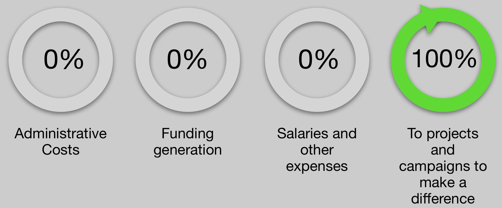

<link rel="import" href="../bower_components/polymer/polymer.html">

<dom-module id="about-us">
  <template>
    <style>
       :host {
        display: block;
      }
      h2, p {
        color: #000000;
      }
      .graph{
        width: 100%;
      }
    </style>
    <section id="one" class="wrapper style2 spotlights">
      <section>
        <div class="content">
          <div class="inner">
            <h2>About Us</h2>
            <p>You have many choices when it comes to donating to a charity.  While there are many worthwhile charities throughout the world the Martin Jahnsen Foundation is among a small group of charities who values your donation and promises not to spend it on anything other than what it was intended for.  No matter what costs are incurred by the Martin Jahnsen Foundation feel good knowing that your donation will only be used to help those who are in need.</p>
            <h2>How Your Donations are Spent</h2>
            <div class="infograph">
              
            </div>
          </div>
        </div>
      </section>
  </template>
  <script>
    Polymer({
      is: 'about-us'
    });

  </script>
</dom-module>
